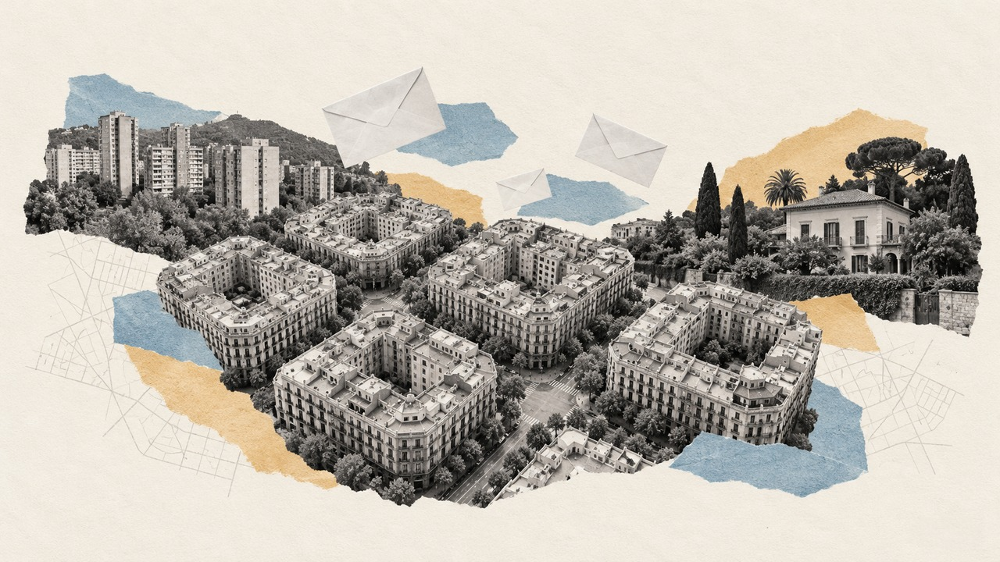

Inicio › Municipios › Barcelona › Barcelona
Barrio de Barcelona · distrito l'Eixample · Generales 2004-2023
Elecciones en la Sagrada Família
Cómo vota este barrio de Barcelona, quién vive en él y en qué se separa del resto de la ciudad
Por Nacho G. del Álamo · Actualizado el

DatoEn la Sagrada Família, en el distrito de l'Eixample, el PSC fue la fuerza más votada en las elecciones generales del 23 de julio de 2023, con el 31,4 % del voto válido, por delante de Sumar (17,4 %). Votó el 68,9 % de sus 33.588 electores, 1,5 puntos más que el conjunto de Barcelona (67,4 %): es el 29.º de los 67 barrios de la ciudad con más participación.
DatoViven en la Sagrada Família 51.472 personas (padrón de 2023), con una edad media de 45,1 años (44,3 en Barcelona). El 26,6 % tiene nacionalidad extranjera, frente al 22,4 % de la ciudad. Según el censo de 2021, el 53,0 % de los adultos tiene estudios superiores (47,1 % en la ciudad) y la tasa de paro era del 9,8 % (11,1 %).
DatoLa renta neta media por unidad de consumo es de 27.674 € al año (28.344 € en Barcelona): el 25.º barrio con más renta de los 67 de la ciudad. El 16,6 % de la población vive por debajo del umbral de pobreza relativa (menos del 60 % de la renta mediana).
Ver la Sagrada Família calle a calle en el mapa de Barcelona
Sección a sección
DatoLa Sagrada Família tiene 34 secciones censales, la unidad más pequeña con resultados electorales (entre 500 y 2.500 electores cada una). En 2023 ganó el PSC, en 34.
PSOE
DatoDentro del barrio también hay distancia: en la sección que más votó (distrito 2, sección 36) participó el 73,4 %, y en la que menos (distrito 2, sección 40), el 64,1 %. La primera tiene una renta de 31.062 € por unidad de consumo; la segunda, de 24.058 €.
Las 34 secciones de la Sagrada Família, una a una
| Sección | Censo | Participación | Más votado | Renta |
|---|---|---|---|---|
| Distrito 2, sección 21 | 961 | 71,5 % | ■ PSOE (33,2 %) | 27.250 € |
| Distrito 2, sección 22 | 844 | 71,3 % | ■ PSOE (35,5 %) | 27.996 € |
| Distrito 2, sección 23 | 793 | 70,2 % | ■ PSOE (36,2 %) | 29.156 € |
| Distrito 2, sección 24 | 680 | 66,2 % | ■ PSOE (33,5 %) | 25.365 € |
| Distrito 2, sección 25 | 736 | 72,8 % | ■ PSOE (35,3 %) | 25.343 € |
| Distrito 2, sección 26 | 1.351 | 69,7 % | ■ PSOE (30,2 %) | 27.404 € |
| Distrito 2, sección 27 | 1.380 | 70,2 % | ■ PSOE (32,9 %) | 26.848 € |
| Distrito 2, sección 28 | 1.344 | 68,1 % | ■ PSOE (31,0 %) | 27.333 € |
| Distrito 2, sección 29 | 832 | 71,9 % | ■ PSOE (36,2 %) | 29.236 € |
| Distrito 2, sección 30 | 828 | 66,5 % | ■ PSOE (34,9 %) | 24.813 € |
| Distrito 2, sección 31 | 728 | 71,7 % | ■ PSOE (33,0 %) | 29.691 € |
| Distrito 2, sección 32 | 827 | 67,4 % | ■ PSOE (30,9 %) | 27.278 € |
| Distrito 2, sección 33 | 772 | 69,6 % | ■ PSOE (33,5 %) | 28.213 € |
| Distrito 2, sección 34 | 697 | 67,9 % | ■ PSOE (38,1 %) | 24.734 € |
| Distrito 2, sección 35 | 890 | 64,7 % | ■ PSOE (28,4 %) | 27.744 € |
| Distrito 2, sección 36 | 841 | 73,4 % | ■ PSOE (27,2 %) | 31.062 € |
| Distrito 2, sección 37 | 854 | 72,7 % | ■ PSOE (30,2 %) | 32.876 € |
| Distrito 2, sección 38 | 1.121 | 72,5 % | ■ PSOE (29,1 %) | 32.270 € |
| Distrito 2, sección 39 | 1.133 | 71,1 % | ■ PSOE (30,6 %) | 26.716 € |
| Distrito 2, sección 40 | 1.011 | 64,1 % | ■ PSOE (33,2 %) | 24.058 € |
| Distrito 2, sección 41 | 1.101 | 65,8 % | ■ PSOE (30,5 %) | 27.410 € |
| Distrito 2, sección 42 | 1.235 | 69,5 % | ■ PSOE (30,9 %) | 31.002 € |
| Distrito 2, sección 43 | 1.016 | 72,6 % | ■ PSOE (25,2 %) | 29.440 € |
| Distrito 2, sección 44 | 804 | 70,0 % | ■ PSOE (27,5 %) | 24.670 € |
| Distrito 2, sección 45 | 783 | 67,8 % | ■ PSOE (27,9 %) | 29.611 € |
| Distrito 2, sección 46 | 1.239 | 66,1 % | ■ PSOE (32,6 %) | 26.074 € |
| Distrito 2, sección 47 | 1.272 | 65,7 % | ■ PSOE (33,2 %) | 27.917 € |
| Distrito 2, sección 48 | 748 | 69,0 % | ■ PSOE (30,3 %) | 26.846 € |
| Distrito 2, sección 49 | 1.187 | 65,5 % | ■ PSOE (32,9 %) | 25.161 € |
| Distrito 2, sección 50 | 1.015 | 68,8 % | ■ PSOE (30,6 %) | 26.852 € |
| Distrito 2, sección 51 | 1.089 | 65,3 % | ■ PSOE (31,1 %) | 26.363 € |
| Distrito 2, sección 52 | 1.110 | 67,4 % | ■ PSOE (26,2 %) | 28.854 € |
| Distrito 2, sección 53 | 1.166 | 66,6 % | ■ PSOE (31,6 %) | 29.089 € |
| Distrito 2, sección 54 | 1.200 | 72,2 % | ■ PSOE (30,2 %) | 29.133 € |
Resultado de las generales de 2023
DatoVoto por partido sobre voto válido (candidaturas más blancos) en las 34 secciones de la Sagrada Família. La línea discontinua marca el resultado del conjunto de Barcelona.
| Partido | Voto | Votos | Barcelona |
|---|---|---|---|
| PSOE | 31,4 % | 7.218 | 33,2 % |
| Sumar / Podemos / IU | 17,4 % | 3.990 | 16,9 % |
| ERC | 14,5 % | 3.321 | 12,2 % |
| PP | 13,9 % | 3.191 | 15,9 % |
| Junts / CiU | 12,7 % | 2.915 | 10,4 % |
| Otros | 5,0 % | 1.141 | 5,1 % |
| Vox | 4,6 % | 1.056 | 5,8 % |
De 2004 a 2023
DatoDesde 2004, el barrio ha cambiado de partido más votado 4 veces: el PSC ganó en 3, ERC ganó en 2, Sumar ganó en 2, Junts ganó en 1 de 8 elecciones. La participación ha pasado del 78,3 % en 2004 al 68,9 % en 2023.
| Elección | Participación | Más votado | PP | PSOE | Sumar / Podemos / IU | Ciudadanos | ERC | Junts / CiU |
|---|---|---|---|---|---|---|---|---|
| 2004 | 78,3 % | PSOE | 16,1 % | 30,4 % | 7,4 % | — | 18,3 % | 25,9 % |
| 2008 | 72,3 % | PSOE | 15,2 % | 36,6 % | 7,7 % | 1,0 % | 9,0 % | 26,8 % |
| 2011 | 68,9 % | Junts / CiU | 17,7 % | 23,4 % | 10,6 % | — | 8,7 % | 31,7 % |
| 2015 | 73,0 % | Sumar / Podemos / IU | 10,5 % | 11,2 % | 25,7 % | 11,2 % | 19,1 % | 18,0 % |
| 2016 | 68,5 % | Sumar / Podemos / IU | 12,2 % | 12,1 % | 24,7 % | 10,3 % | 21,8 % | 16,2 % |
| abr. 2019 | 80,1 % | ERC | 5,1 % | 20,2 % | 15,7 % | 10,3 % | 27,5 % | 12,8 % |
| nov. 2019 | 75,1 % | ERC | 7,7 % | 17,0 % | 16,6 % | 5,2 % | 24,3 % | 15,1 % |
| 2023 | 68,9 % | PSOE | 13,9 % | 31,4 % | 17,4 % | — | 14,5 % | 12,7 % |
Con las secciones censales de 2023: los resultados de cada elección son los de las secciones que ya existían con el mismo código. Las familias agrupan a cada partido con sus antecesores y coaliciones (Podemos, IU y Sumar; Junts y CiU).
Quién vive en el barrio
| la Sagrada Família | Barcelona | |
|---|---|---|
| Habitantes (2023) | 51.472 | 1.613.579 |
| Edad media | 45,1 | 44,3 |
| Menores de 18 años | 11,3 % | 14,1 % |
| 65 años o más | 22,5 % | 21,5 % |
| Nacionalidad extranjera | 26,6 % | 22,4 % |
| Nacidos fuera de España (2021) | 30,6 % | 26,9 % |
| Con estudios superiores (2021) | 53,0 % | 47,1 % |
| Tasa de paro (2021) | 9,8 % | 11,1 % |
| Renta neta por unidad de consumo | 27.674 € | 28.344 € |
| Renta neta por habitante | 19.439 € | 19.432 € |
| Bajo el umbral de pobreza relativa | 16,6 % | 16,4 % |
Medias de las secciones del barrio ponderadas por su población. Padrón y Atlas de Distribución de Renta de los Hogares del INE (2023); estudios, paro y lugar de nacimiento, del censo de población de 2021. La relación entre estas cifras y el voto es entre barrios, no entre personas.
Otros barrios del distrito de l'Eixample
- la Nova Esquerra de l'Eixample: el PSC, participación del 70,7 %
- la Dreta de l'Eixample: el PSC, participación del 70,4 %
- l'Antiga Esquerra de l'Eixample: el PSC, participación del 68,8 %
- Sant Antoni: el PSC, participación del 69,2 %
- el Fort Pienc: el PSC, participación del 68,3 %
Más datos
- Todos los barrios de Barcelona
- Barrios de las grandes ciudades de España
- Elecciones en Barcelona, desde 1977
- Participación electoral por barrio en toda España
- Voto y renta por barrios en toda España
Método y fuentes
- Qué es el barrio
- Los límites de barrios y distritos son los de OpenStreetMap (© colaboradores de OpenStreetMap, licencia ODbL), que en la mayoría de ciudades copian la división oficial del ayuntamiento. Cada sección censal del INE se asigna al barrio con el que comparte más superficie; las que caen menos de la mitad dentro de un barrio no se asignan. Como las secciones no siempre siguen los límites de los barrios, alguna manzana del borde puede quedar en el barrio vecino.
- Datos
- Resultados oficiales por mesa del Ministerio del Interior (Infoelectoral) agregados por sección censal, sin el voto de los residentes en el extranjero (CERA). Renta y población: Atlas de Distribución de Renta de los Hogares y padrón del INE (2023); estudios, paro y lugar de nacimiento: censo de población de 2021.
- Cómo se calcula
- Porcentajes sobre voto válido (candidaturas más votos en blanco), sumando votos de las secciones, no promediando porcentajes. Participación: votantes entre censo. Agrupación de partidos y límites: metodología del mapa.
- Datos abiertos
- Las cifras salen de las descargas del mapa (CSV, licencia CC BY 4.0); la relación entre secciones y barrios está en data/barrios/secciones_barrio.csv.
- Autoría y revisión
- Nacho G. del Álamo. Publicado el 22 de octubre de 2026; actualizado el 22 de octubre de 2026. Política editorial · Correcciones